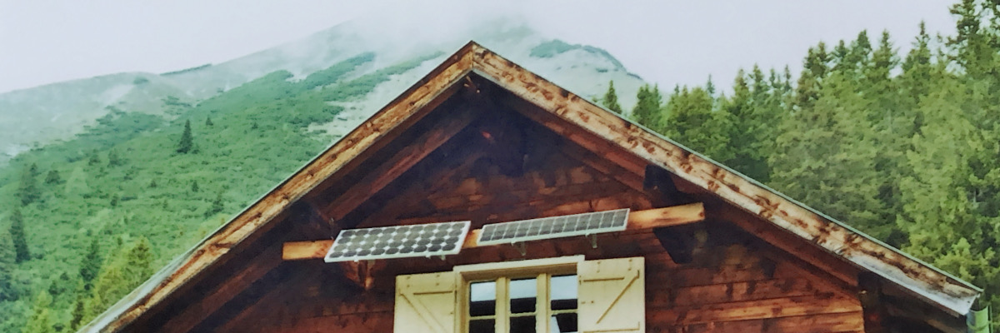

Achselbodenhütte und Höttinger Alm
Die Wanderung zur Höttinger Alm über die Achselbodenhütte schlängelt sich an der steilen Südflanke des Achselkopf hoch. Der Pfad ist anspruchsvoll aber einfach aus der Stadt Innsbruck zu erreichen, es lockt nicht nur die schöne Aussicht über Innsbruck, sondern auch die Höttinger Alm mit kulinarischen Schmankerln. Knie schonend geht es sehr viel flacher als im Aufstieg wieder bergab.
Streckenbeschreibung
Der Startpunkt dieser Wanderung liegt am Bahnhof Hötting, man könnte alternativ auch am Planötzenhof starten. Vom Bahnhof zum Fürstenweg und weiter dem Sebastian-Kneipp-Weg Richtung Norden folgen. Beim Einkaufszentrum West die Höttinger Au kreuzen und die Treppen zum Speckweg hinauf. Diesem bis zum Schlotthofweg folgen bis man auf den Wanderweg zum Planötzenhof kommt. Nach dem Planötzenhof weiter zum Höttinger Bild, dort beten für das was jetzt folgt und Wasser auffüllen nicht vergessen! Das Höttinger Bild (Kapelle) vor uns, links auf den Wanderweg zum Achselkopf folgen, ab jetzt wird es zunehmend steiler. Dabei nicht von flacheren Wanderwegen irritieren lassen und erst recht nicht vom Forstweg, der bald gekreuzt wird, es geht steil hinauf. Bald wird es sogar so steil, dass die Hände gebraucht werden (hoffentlich das Gebet nicht vergessen, sonst an Schmankerl auf der Höttinger Alm denken). Auf einem Vorsprung (dem Achselkopf) sind die technischen Schwierigkeiten vorbei, kurz stehen bleiben und die Aussicht geniessen lohnt sich. Dann geht es gemütlicher weiter zur Achselbodenhütte auf 1645m, dort kann auch wieder Wasser aufgefüllt werden. Dann dem Wanderweg zur Höttinger Alm folgen und dort ein verdientes Schmankerl geniessen. Abstieg: Hinab Richtung Höttinger Graben dem Wanderweg nach Hötting/Höttinger Bild folgen. Dort auf altbekanntem Wege zurück oder noch eine kleine Schleife einen kleinen Umweg einbauen, um nicht den gleichen Weg zurück zu gehen.
Einkehrmöglichkeiten
Die Höttinger Alm liegt auf etwa 1500m und ist von Mai bis Oktober geöffnet. Auf der Speisekarte stehen diverse Knödel, Suppen, Salate und Jausenzeite, typisch Tiroler Hüttenkost!
Wasserquellen: Höttinger Bild, Achselbodenhütte und Höttinger Alm
Anreise
Die Wanderung ist toll von Innsbruck zu erreichen, ob man nun vom Bahnhof Hötting, vom Planötzenhof, der Bushaltestelle Schlotthofweg (Buslinie A) oder von zuhause startet.